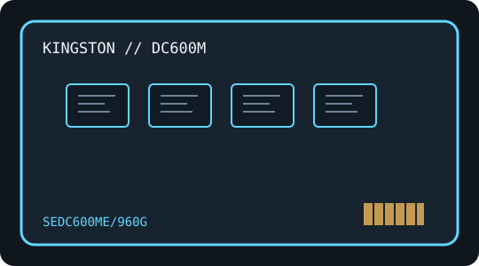

[ INDIVIDUAL COMPONENT // SATA SOLID-STATE DRIVE ]
Kingston DC600ME 960 GB (SEDC600ME/960G)
Model-specific catalog entry for a mixed-use, self-encrypting enterprise drive. Specifications below are transcribed from the Kingston family datasheets only where the capacity-specific row identifies them.

IDENTIFICATION: Match the full label SEDC600ME/960G, capacity and unit firmware before service. Capacity variants have separate performance and endurance values.
Specifications
| Manufacturer / model | Kingston DC600ME |
|---|---|
| Full manufacturer SKU | SEDC600ME/960G |
| Capacity | 960 GB |
| Workload class | mixed-use, self-encrypting enterprise SSD |
| Form factor | 2.5-inch, as stated in the manufacturer datasheet; height is not asserted here. |
| Interface / protocol | SATA Revision 3.0 (6 Gb/s); this is SATA, not NVMe. |
| NAND | 3D TLC NAND, per Kingston's family datasheet. |
| Controller | Not identified in the cited Kingston datasheets; no controller model is inferred. |
| Performance | Up to 560/530 MB/s sequential read/write; up to 94,000/65,000 IOPS steady-state 4K random read/write, as published for this capacity. |
| Endurance | 1,752 TBW; 1 DWPD over 5 years; Kingston states the TBW/DWPD values are derived from the JEDEC Enterprise Workload. They are manufacturer ratings, not a prediction of this unit's remaining life. |
| Power-loss protection | Hardware-based power-loss protection; Kingston identifies hold-up capacitors for the DC600M family. |
| Encryption | AES 256-bit encryption and TCG Opal 2.0 are identified by Kingston for the DC600ME variant. |
| Firmware | The family datasheets do not identify a firmware revision for an individual unit. Record the installed revision from the drive and use only Kingston instructions intended for the exact labelled SKU; do not cross-flash between product variants. |
| Host compatibility | 2.5-inch SATA drive; SATA Revision 3.0 (6 Gb/s), with manufacturer-stated backward compatibility to SATA Revision 2.0 (3 Gb/s). Requires compatible SATA data/power connections, bay/backplane and host firmware. Check OS/driver, RAID or bridge support for ATA management commands before relying on SMART, TRIM or firmware maintenance. |
Service & preservation notes
- Record label, serial, capacity, firmware, SMART/health data, server/backplane and datasheet revision together.
- Keep verified backups and periodic integrity checks; enterprise workload ratings and power-loss safeguards do not replace redundant storage or backups.
- Do not generalize encryption, firmware, behavior or endurance between DC600M and DC600ME, or between DC500M and DC500R.
- For firmware or management tasks, follow current manufacturer guidance for this exact SKU and use a directly supported SATA path; never cross-flash based on a shared family name.
Manufacturer datasheets
- Kingston DC600M manufacturer datasheet — US edition (PDF)Kingston DC600M/DC600ME family datasheet (US edition); capacity-specific performance and endurance tables include this SKU.
- Kingston DC600M manufacturer datasheet — English edition (PDF)Kingston DC600M/DC600ME family datasheet (English edition); cross-check the model-specific row and revision against the drive label.